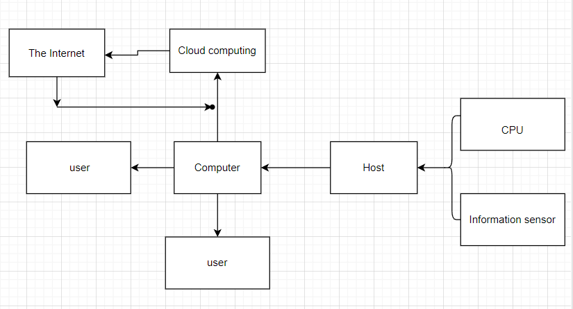

My ICT project: Principle and application of cloud technology
| Java | CPU |
| Need software: Java（Windows 10） | The hardware: Intel Core i9-12900KS |
System diagram
The cloud computing transmits information to the CPU and feeds it back to the computer, and then the computer feeds back to the current page, and the CPU and the sensor transmit information to each other
The flow chart 
The sensor receives the information data to the host, and then transmits it to the local computer. The cloud storage can be carried out through the network, which is very convenient and efficient. When needed, the information can be transmitted back through the network